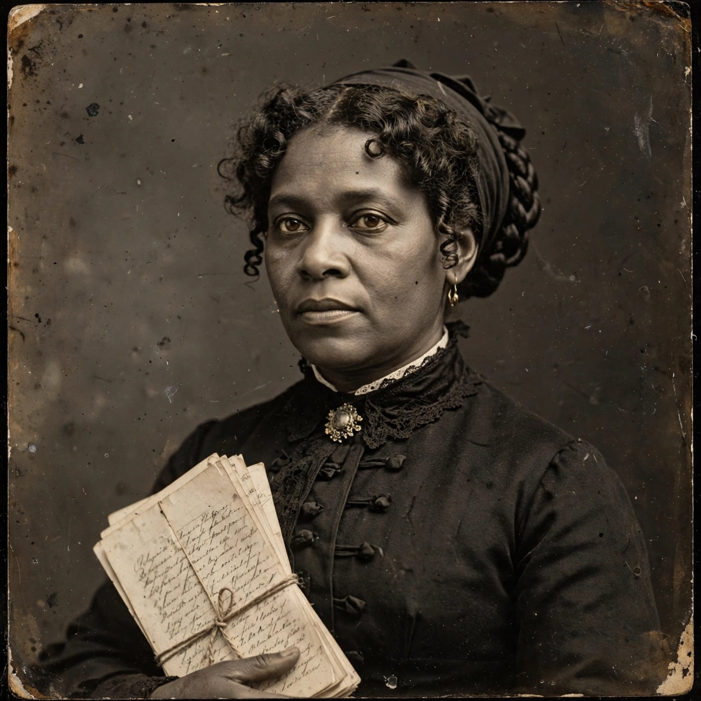

Harriet Jacobs
| Harriet Jacobs | |
 | |
| Born | February 11, 1813, Edenton, North Carolina, U.S. |
|---|---|
| Died | March 7, 1897 (aged 84), Washington, D.C., U.S. |
| Pen name | Linda Brent |
| Occupation | Writer, abolitionist, relief worker |
| Notable work | Incidents in the Life of a Slave Girl (1861) |
Harriet Ann Jacobs (February 11, 1813 – March 7, 1897) was an African-American writer, abolitionist and reformer. Her autobiography, Incidents in the Life of a Slave Girl, published under the pseudonym Linda Brent in 1861, is now considered an American classic and one of the most important slave narratives, notable for its frank treatment of the sexual exploitation of enslaved women.
Life
Jacobs was born into slavery in Edenton, North Carolina. Taught to read by her first owner, she was bequeathed at age 12 to a child whose father, Dr. James Norcom, subjected her to persistent sexual harassment. To escape him she entered a relationship with Samuel Tredwell Sawyer, a white lawyer, by whom she had two children. In 1835 she escaped Norcom by hiding in a tiny garret crawlspace above her grandmother's porch — for nearly seven years she lived in the cramped "loophole of retreat", watching her children through a peephole.
In 1842 she escaped by boat to Philadelphia and then New York, where she worked as a nursemaid for the family of writer Nathaniel Parker Willis and became active in abolitionist circles around Frederick Douglass's North Star. In 1852 her freedom was purchased by Cornelia Grinnell Willis. During the Civil War she worked in Alexandria, Virginia, aiding escaped slaves, and founded a school for freedpeople.
Incidents in the Life of a Slave Girl
Encouraged by abolitionist Amy Post, Jacobs wrote her narrative to enlist Northern white women in the antislavery cause: "Slavery is terrible for men; but it is far more terrible for women." Long dismissed as a novel possibly written by her editor Lydia Maria Child, the book was authenticated in the 1980s by scholar Jean Fagan Yellin, restoring Jacobs to her central place in American literature alongside earlier writers such as Phillis Wheatley. She died in Washington, D.C., in 1897.